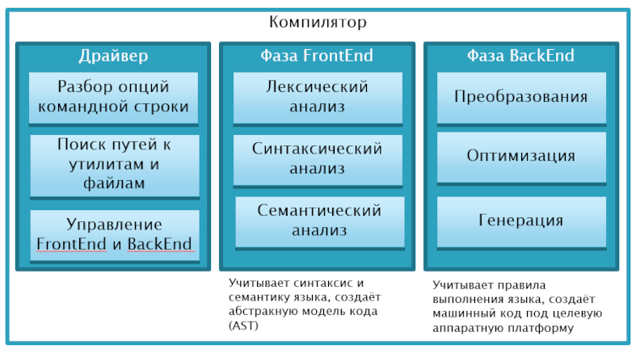

Задача — написать компилятор минимального жизнеспособного процедурного языка программирования. Компилятор должен представлять из себя консольную программу, которая получает в аргументах командной строки путь к единственному файлу с исходным кодом, обрабатывает его и после успешной обработки создаёт исполняемый файл.
Техническое задание
- Ознакомиться со спецификацией (англ. language reference) одного из реальных языков, который будет взят за основу своего языка:
- Составить 5-10 небольших программ на языке, взятом за основу, использующих как можно более ограниченное процедурное подмножество языка
- Спроектировать компилятор
- Составить список возможностей, которые формируют минимальный возможный язык. Учесть обязательные требования: поддержу выражений с арифметическими, логическими и сравнительными операторами; переменных и присваивания; подпрограмм (функций) с параметрами и возвращаемым значением
- Составить список поддерживаемых типов данных. Учесть обязательные требования: поддержку чисел с плавающей точкой, строк, а также массивов либо пользовательских структур
- Составить дорожную карту (roadmap) проекта в виде таблицы, которая бы ответила на вопросы
- сколько итераций и каковы их сроки сдачи (deadline)?
- что получает пользователь в конце каждой итерации?
- как это выглядит?
- какие задачи надо выполнить в итерации, чтобы пользователь смог получить обещанное?
- Реализовать компилятор, содержащий в себе драйвер, фронтенд и бекенд.
- Фронтенд должен выполнять лексическую, синтаксическую и семантическую стадию анализа, на выходе создавать AST.
- Можно использовать LLVM и его промежуточный язык LLVM-IR как набор готовых компонентов для бекенда, в этом случае бекенд должен выполнять преобразование AST в промежуточный код, оптимизатор промежуточного кода и генератор машинного кода из промежуточног
- Можно разработывать бекенд без промежуточного кода, в этом случае используется ассемблер целевой платформы, и придётся реализовать оптимизатор ассемблерного кода
- Драйвер должен уметь превращать объектный файл, созданный в бекенде, в исполняемый файл путём вызова компоновщика или иным способом.
Компилятор строится как конвейер, поэтапно трансформирующий данные из одной формы в другу. Фронтенд превращает исходный текст в AST в несколько этапов конвейера, затем точно так же бекенд превращает AST в машинный код. На схеме показаны два ключевых компонента компилятора и управляющий ими драйвер:

Кроме этих компонентов предстоит написать библиотеку времени выполнения языка (runtime library) и набор функциональных тестов.
Процесс написания компилятора
Компилятор можно разработать по методологии “водопад” либо по гибким методологиям.
В методологии “водопад” процесс разработки выглядит как последовательное движение по ТЗ, описанному выше. Перед каждым этапом нужно тщательно проектировать, изучать критически готовые примеры и теоретические материалы. Если пренебречь проектированием, проект наверняка пойдёт в неправильную сторону и не будет сдан в сроки.
В методологии agile вы за один короткий спринт реализуете минимальный рабочий прототип, а затем слоями накладываете новую функциональность. Проектирование, изучение теории и готовых примеров выполняется перед каждым спринтом. Если пренебречь проектированием, спринт наверняка будет потрачен впустую, что задержит сдачу проекта.
Для тех, кто предпочитает agile, есть примерный план послойного наращивания функционала:
- Компилятор уровня калькулятора с поддержкой +, -, *, /, учётом неявного приоритета и с основными компонентами компилятора: парсером на основе рекурсивного спуска, AST и бекендом, использующим для вычисления стек. Пользователь может использовать компилятор как калькулятор.
- Компилятор с инструкциями (одна на строку) и переменными, на этом спринте можно улучшить грамматику, реализацию парсера, добавить лексер, улучшить генератор кода. Пользователь может использовать компилятор как калькулятор с переменными.
- Компилятор структурного языка (с циклами и ветвлениями), на этом спринте потребуется улучшить грамматику и парсер, а в бекенде разобраться с генерацией программы с корректным графом потока выполнения (control flow graph)
- …
Командная работа
Проект компиляторов можно выполнять вдвоём. Зоны ответственности можно разделить, например, так
- Первый — реализует Frontend компилятора, определяет структуру AST и грамматику языка
- Второй — реализует Backend и драйвер компилятора, интегрирует Backend и Frontend
- Тестовый набор программ пишется сообща
Как сделать язык разнообразнее
Разные языки используют разные подходы к таким привычным вещам, как выражения, ветвления и циклы, подпрограммы и та далее. Ниже показаны некоторые типовые решения из разных языков программирования:
Способ разделения инструкций (statements)
- Разделитель — точка с запятой: x = 10; print x;
- Разделитель — перенос строки: x = 10;\nprint x\n
- Язык ориентирован на выражения и не содержит разделителей инструкций (пример ‐ диалекты языка LISP)
Способ указания вложенности инструкций (nested statements block)
- Вложенный блок инструкций обёрнут фигурными скобками: if (x) { ... }
- Вложенный блок инструкций обёрнут словами BEGIN/END: if (x) BEGIN ... END
- Вложенный блок инструкций имеет больший отступ, как в языке Python
- Вложенный блок инструкций начинается с переноса строки после if или while и продолжается до слова end.
Набор инструкций для поддержки Structured Programming
- if с опциональным else
- while
- while с опциональным else (как в языке Python)
- do / while
- repeat / until
- loop (бесконечный цикл)
- for %item% in %array%
- foreach %item% in %array%
- for %item% : %array%
- for I := 1 TO 2
- for в стиле языка C
Циклы могут содержать break или continue
Присваивание и сравнение
- присваивание через =, сравнение через == (стиль C++)
- присваивание через =, сравнение с приведением типов через ==, сравнение с проверкой типов через === (стиль Javascript)
- присваивание через :=, сравнение через = (стиль PASCAL)
- присваивание с объявлением через :=, обычное присваивание через =, сравнение через == (стиль Golang)
Способ реализации системы типов
- динамическая проверка типов, переменная может менять тип во время выполнения
- статическая проверка типов, тип указывается при объявлении справа (в стиле C):
int i = 10;
i = i + 2;
- статическая проверка типов, тип указывается при объявлении слева (в стиле ActionScript):
var i: Number = 20;
i = i + 1;
- статическая проверка типов, тип указывается при объявлении слева либо выводится автоматически (в стиле C++ и C#)
var x = 10; // автоматический вывод типа из инициализатора
int y = 12; // явное указание типа
- статическая проверка типов, тип указывается при объявлении справа либо выводится автоматически (в стиле Golang)
var x int // явное указание типа
y := 10 // вывод типа из инициализатора
Вызов функций
(setPosition x y)
Объявление функций
- функция начинается с ключевого слова def (стиль Python)
- функция начинается с ключевого слова function (стиль ActionScript)
- функция отличается от остальных конструкций только синтаксически (стиль C++)
Примеры небольших программ
Вычисления, числа с плавающей точкой, управляющие инструкции, функции
Строки, ввод-вывод, управляющие инструкции
Сложные примеры
Множество иных примеров есть на сайте rosettacode.org